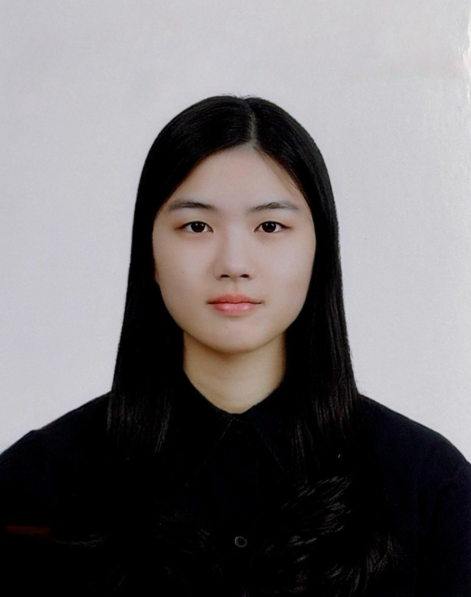
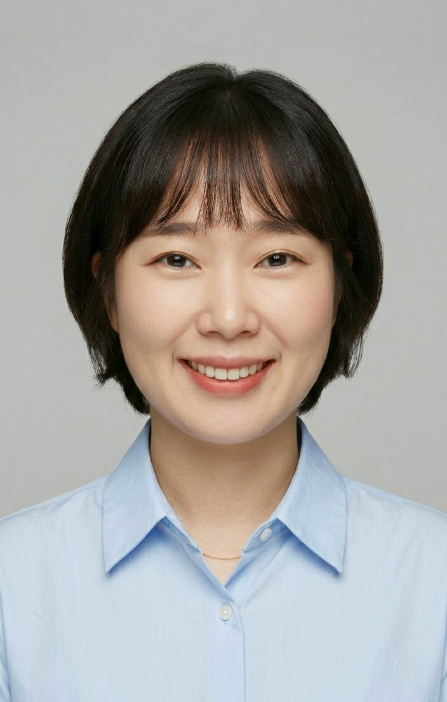

💻 온라인 질의응답 선생님
온라인으로 과목별 질문에 답변해드립니다
정민희
미추홀외국어고등학교 졸업 · 연세대학교 경영학과 재학
미추홀외고 전교 1등 출신. 2024 수능 국어 백분위 100, 영어 1등급 달성. 폭넓은 과목 질의응답이 가능합니다.

안소윤
인천포스코고등학교 졸업 · 연세대학교 불어불문학과 재학
이과 계열로 3년간 공부 후 인문논술로 문과 진학. 현역 수능 국어 백분위 99% 달성.
백효찬
백효찬
박세영
과학고등학교 조기졸업 · 카이스트 재학
과학고 조기졸업 경험을 바탕으로 수학 및 과학 과목 문제 풀이 전략을 중심으로 질의응답합니다.

이태호

김민지
유신화
유신화
🏫 대면 질의응답 선생님
독서실에서 직접 만나 질문할 수 있습니다 N수생만 이용 가능

임건우
인천포스코고등학교 졸업 · 서울대학교 바이오시스템소재학부 재학
정시 현역 서울대 입학 후 재수하여 의예과 진학 예정. 수시·정시 병행 경험으로 다양한 조언이 가능합니다.

박시원
인천포스코고등학교 졸업 · 서울대학교 학부 광역 재학
정시 일반 전형으로 서울대 합격. 수능 대비에 대한 깊은 이해와 검증된 전략을 보유하고 있습니다.
정민희
미추홀외국어고등학교 졸업 · 연세대학교 경영학과 재학
미추홀외고 전교 1등 출신. 2024 수능 국어 백분위 100, 영어 1등급.

남현수
영어영문학 전공 · 호주 University of Canberra (Accounting) · Macquarie University 통번역대학원 수료
현) 수리딩어학원 10년차 대표강사
25년의 내공, 결과로 증명하는 압도적 강의
대원외고·대일외고 등 주요 외고 및 국제고, 송도·연수구 지역 고등학교 대상 20년 이상 전문 과외를 진행하며 학교별 출제 경향을 완벽히 꿰뚫고 있습니다.
대상 학교: 대원외고, 대일외고, 국제고, 미추홀외고, 인천외고 및 송도·연수 지역 고교
전문 분야: 학교별 내신 밀착 관리, 심화 문법, 원서 독해, 영자 신문, 수능 대비
수업 특징:
· 학생 맞춤형 컨설팅 — 개인별 취약점 분석 및 학습 로드맵 제공
· 효율적 강의 — 복잡한 개념을 쉽고 명확하게, 핵심만 전달
· 실전 전문성 — 통번역대학원 수료 및 25년 경력의 고난도 영어 완벽 대비
25년의 내공, 결과로 증명하는 압도적 강의
대원외고·대일외고 등 주요 외고 및 국제고, 송도·연수구 지역 고등학교 대상 20년 이상 전문 과외를 진행하며 학교별 출제 경향을 완벽히 꿰뚫고 있습니다.
대상 학교: 대원외고, 대일외고, 국제고, 미추홀외고, 인천외고 및 송도·연수 지역 고교
전문 분야: 학교별 내신 밀착 관리, 심화 문법, 원서 독해, 영자 신문, 수능 대비
수업 특징:
· 학생 맞춤형 컨설팅 — 개인별 취약점 분석 및 학습 로드맵 제공
· 효율적 강의 — 복잡한 개념을 쉽고 명확하게, 핵심만 전달
· 실전 전문성 — 통번역대학원 수료 및 25년 경력의 고난도 영어 완벽 대비
유신화
유신화